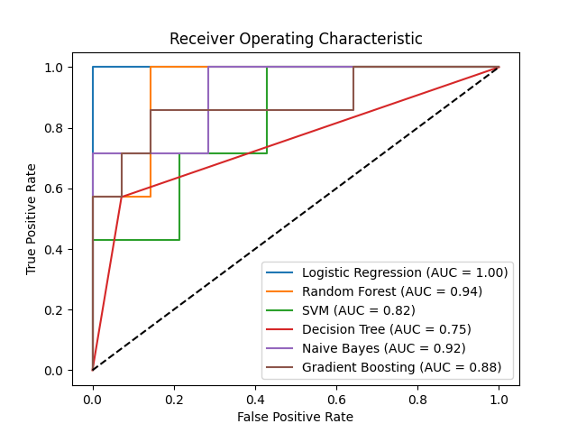
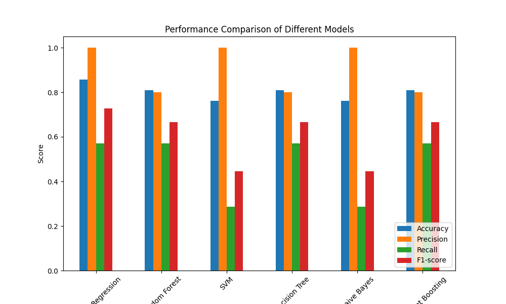

Code Metrics Feature Extraction Evaluation Models
Comparison Table
| Model |
Accuracy |
Precision |
Recall |
F1-score |
| Logistic Regression |
0.7619 |
1.0000 |
0.2857 |
0.4444 |
| Random Forest |
0.7143 |
0.6000 |
0.4286 |
0.5000 |
| SVM |
0.6667 |
0.5000 |
0.1429 |
0.2222 |
| Decision Tree |
0.7143 |
0.6000 |
0.4286 |
0.5000 |
| Naive Bayes |
0.7143 |
1.0000 |
0.1429 |
0.2500 |
| Gradient Boosting |
0.7619 |
0.7500 |
0.4286 |
0.5455 |
ROC Curve

Bar Plot

Evaluation Results
Logistic Regression
- Accuracy: 0.7619
- Precision: 1.0000
- Recall: 0.2857
- F1-score: 0.4444
Random Forest
- Accuracy: 0.7143
- Precision: 0.6000
- Recall: 0.4286
- F1-score: 0.5000
SVM
- Accuracy: 0.6667
- Precision: 0.5000
- Recall: 0.1429
- F1-score: 0.2222
Decision Tree
- Accuracy: 0.7143
- Precision: 0.6000
- Recall: 0.4286
- F1-score: 0.5000
Naive Bayes
- Accuracy: 0.7143
- Precision: 1.0000
- Recall: 0.1429
- F1-score: 0.2500
Gradient Boosting
- Accuracy: 0.7619
- Precision: 0.7500
- Recall: 0.4286
- F1-score: 0.5455